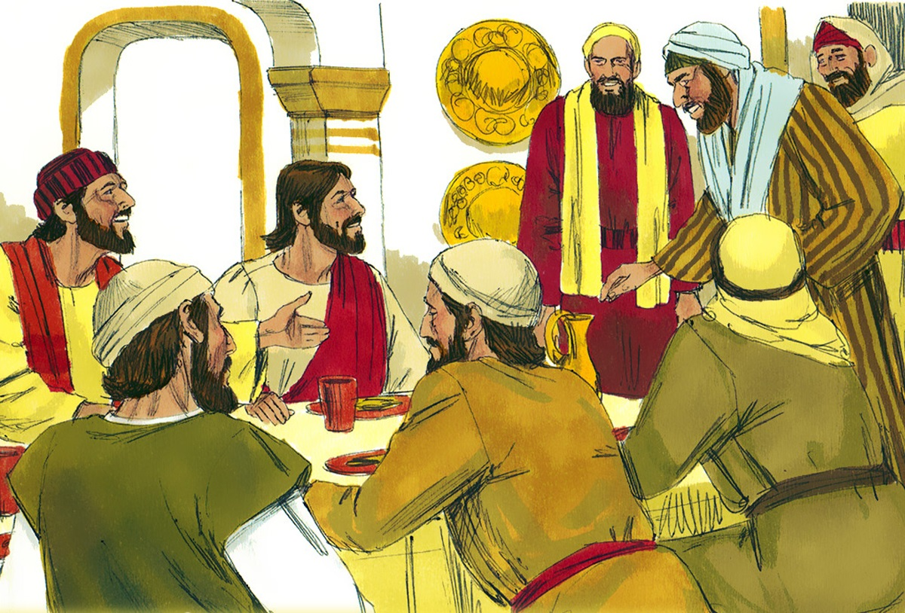

Leitura Orante
Leituras do Dia
Sábado 30ª do Tempo Comum
(Verde -Ofício do dia )
31 de outubro de 2020
Leitura Orante do Evangelho
Ouça o áudio da oração e reflexão do padre Francisco das Chagas


Oração do dia
Deus eterno e todo-poderoso, aumentai em nós a fé, a esperança e a caridade, e dai-nos amar o que ordenais para conseguirmos o que prometeis. Por nosso Senhor Jesus Cristo, vosso Filho, na unidade do Espírito Santo.
Leitura: Fl 1,18-26
Irmãos,18 de qualquer maneira, com segundas intenções ou com sinceridade, Cristo é anunciado. E eu me alegro com isso e sempre me alegrarei. 19Pois eu sei que isso resultará na minha salvação graças à vossa oração e à assistência do Espírito de Jesus Cristo. 20 Segundo a minha viva expectativa e a minha esperança, não terei de corar de vergonha. Se a minha firmeza continuar total, como sempre, então Cristo vai ser glorificado no meu corpo, seja pela minha vida, seja pela minha morte. 21 Pois, para mim, o viver é Cristo e o morrer é lucro. 22 Entretanto, se o viver na carne significa que meu trabalho será frutuoso, neste caso não sei o que escolher. 23Sinto-me atraído para os dois lados: tenho o desejo de partir, para estar com Cristo – o que para mim seria de longe o melhor -, 24mas para vós é mais necessário que eu continue minha vida neste mundo. 25Por isso, sei com certeza que vou ficar e continuar com vós todos, para que possais progredir e alegrar-vos na fé. 26Assim, com a minha volta para junto de vós, vai aumentar ainda a razão de vos gloriardes em Cristo Jesus– Palavra do Senhor.
Salmo Responsorial: 41(42)
Minha alma tem sede de Deus, do Deus vivo!
Assim como a corça suspira pelas águas correntes, suspira igualmente minha alma por vós, ó meu Deus!
Minha alma tem sede de Deus, do Deus vivo!
Minha alma tem sede de Deus e deseja o Deus vivo. Quando terei a alegria de ver a face de Deus?
Minha alma tem sede de Deus, do Deus vivo!
Peregrino e feliz caminhando para a casa de Deus, entre gritos, louvor e alegria da multidão jubilosa.
Minha alma tem sede de Deus, do Deus vivo!Evangelho: Lucas 14,1.7-11
1 Aconteceu que, num dia de sábado, Jesus foi comer na casa de um dos chefes dos fariseus. E eles o observavam. 7 Jesus notou como os convidados escolhiam os primeiros lugares. Então, contou-lhes uma parábola: 8 “Quando tu fores convidado para uma festa de casamento, não ocupes o primeiro lugar. Pode ser que tenha sido convidado alguém mais importante do que tu, 9 e o dono da casa, que convidou os dois, venha te dizer: ‘Dá o lugar a ele’. Então tu ficarás envergonhado e irás ocupar o último lugar. 10 Mas, quando tu fores convidado, vai sentar-te no último lugar. Assim, quando chegar quem te convidou, te dirá: ‘Amigo, vem mais para cima’. E isso vai ser uma honra para ti diante de todos os convidados. 11 Porque quem se eleva será humilhado, e quem se humilha será elevado”. – Palavra da salvação.
Leituras do mês
TAGS
missao Amazonia evengel covid-19 indigenas novica papa francisco
Destaques
Província Stella Matutina
Rua São Benedito, 2146 - Santo Amaro - São Paulo - SP |
Tel. (11)
5547-7222


Província Spiritus Divinae Sapientiae
Rua Arnaldo Janssen, 320 - Cara-Cara - Ponta Grossa - PR |
Tel. (42) 3326 4091